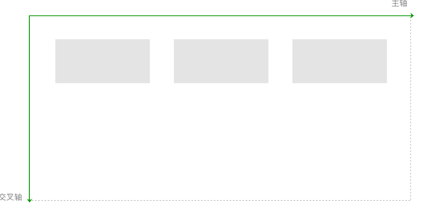

flex的概念最早是在2009年被提出，目的是提供一种更灵活的布局模型，使容器能通过改变里面项目的高宽、顺序，来对可用空间实现最佳的填充，方便适配不同大小的内容区域。
在不固定高度信息的例子中，我们只需要在容器中设置以下两个属性即可实现内容不确定下的垂直居中。
.container{
display: flex;
flex-direction: column;
justify-content: center;
}
flex不单是一个属性，它包含了一套新的属性集。属性集包括用于设置容器，和用于设置项目两部分。
设置容器的属性有：
display: flex;
flex-direction: row （默认值） | row-reverse | column |column-reverse
flex-wrap: nowrap （默认值） | wrap | wrap-reverse
justify-content: flex-start（默认值） | flex-end | center |space-between | space-around | space-evenly
align-items: stretch （默认值） | center | flex-end | baseline | flex-start
align-content: stretch （默认值） | flex-start | center |flex-end | space-between | space-around | space-evenly
设置项目的属性有：
order: 0（默认值） | <integer>
flex-shrink: 1（默认值） | <number>
flex-grow: 0（默认值） | <number>
flex-basis: auto（默认值） | <length>
flex: none | auto | @flex-grow @flex-shrink @flex-basis
align-self: auto（默认值） | flex-start | flex-end |center | baseline | stretch
在开始介绍各个属性之前，我们需要先明确一个坐标轴。默认的情况下，水平方向的是主轴（main axis），垂直方向的是交叉轴（cross axis）。

图4-5 默认情况下的主轴与交叉轴
项目是在主轴上排列，排满后在交叉轴方向换行。需要注意的是，交叉轴垂直于主轴，它的方向取决于主轴方向。

图4-6 项目是在主轴上排列，排满后在交叉轴方向换行
接下来的例子如无特殊声明，我们都以默认情况下的坐标轴为例。